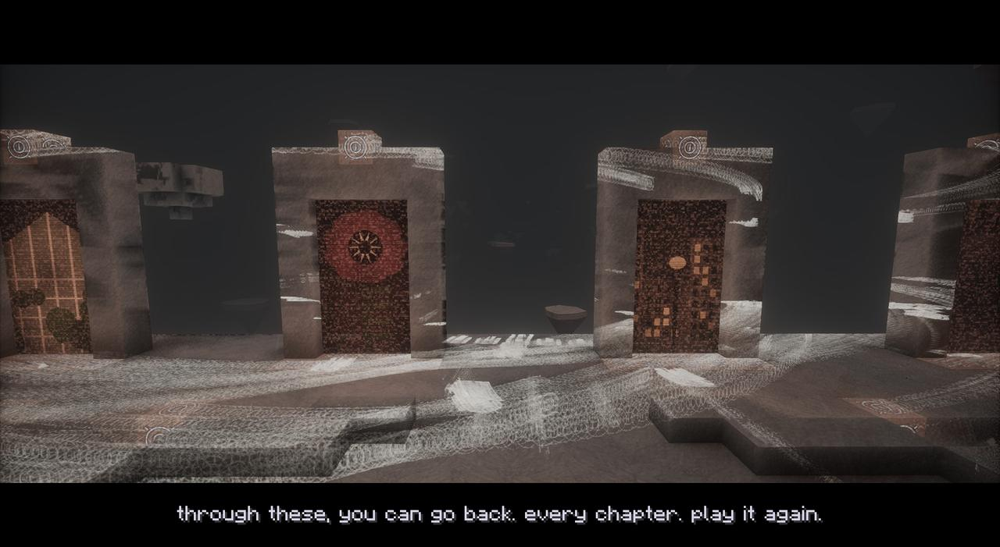
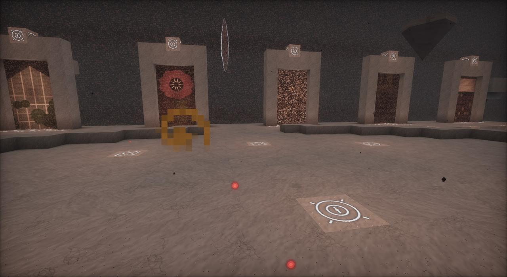

- First time
- After the last show's credits, his hand comes up through them and takes you there
- After that
- Use the Remote; use it again in the Hub to go home
- Way out
- The Remote, or the edge (home to your bed or the world's spawn, no harm in the fall)
- Sleep
- No: "Not here. Not with it out there, past the wall."
- Music
- The Hub
What it is
A realm the Watcher made, floating in a sky of drifting static with a pale fog over everything. The middle of it is a round plaza of pale Hub Stone, about thirty-three blocks across, with his marks lit in it as Hub Glyphs in two rings and a cross in the middle. Underneath, the stone tapers away to a point, the way an island would if it had been torn up out of something. A few smaller pieces of it hang in the static round about. Being taken there earns The Hub.

His speech
The first time, he's there with you (the cutscene The Hub):
this is the hub.
i made it. a realm. it isn't mine - nothing is - but i made it.
through these, you can go back. every chapter. play it again.
or jump off the edge. it'll take you home, and you can carry on.
He doesn't get to finish. A voice tears the sky over the gallery open ("ENOUGH."), and the First Signal comes through. The whole scene is on Chapter Seven.
The gallery and its replay portals
Along the north side of the plaza runs the gallery, a walk with six Replay Portals standing on it, one for each chapter, each with its chapter playing in it like a picture on an old set. Walk into one and you're back at that chapter's place in your world. A moment later its last fight comes back for another go: a replay.

| Portal | Takes you to | What comes back |
|---|---|---|
| The Hollow | The Cathedral of the Hollow | The Hollow Saint, rising out of the floor |
| Act Two | The Botanic Gardens' glasshouse | The Gardener |
| The Bloom | The Great Bloom's arena | The Gardener, Reborn |
| The Flesh | The Laboratory | Specimen Zero |
| The Static | The Deep | The Deaf King |
| The Door | The Stalls | The Crowd, getting up out of the heap of them |
Going through one earns Previously On.... The story stays told: whoever comes back is marked as a replay, and beating it again sets nothing off (no new act, no lockdown, no tickets). It fights the way it did and goes down the way it did, and then "(The Remote takes you back to the Hub.)" Beating a replay also leaves three or four Rerun Reels, which Chapter Seven's gear is made from (see gear for every chapter).
A replay ends if you go more than 160 blocks from it, leave, die, log out, or take longer than twenty minutes: "The replay's over - it's gone back into the static." If a chapter's place isn't in your world, the portal says "there's nothing there to go back to in this world."
The edge
On the south side of the plaza a walk goes out over nothing: the edge. Jump off and you fall, the Hub going away above you, and come down at home (your bed, or the world's spawn) with no harm done.
Since 1.62.0 there's one exception. If you've never been down in the Dead Water, the Watcher is there as you fall, and he tears a portal open under you. You come down on the rig in the Dead Water instead (Chapter Eight). The first time, at the end of his speech, that's where the jump goes. Worlds that had their landing at home before 1.62.0 get there by taking the Remote to the Hub and jumping off.
The wall, and what's past it
When you both went off the edge the first time, he shut the realm behind you with a wall of static. Back in the Hub, the First Signal is still there, past that faint wall, standing and watching you. Now and then you hear it.
The Remote
The Remote is an old television's remote whose blank button is warm (being given it earns Channel Changer). Use it at home and it takes you to the Hub; use it in the Hub and it takes you home. Since 1.62.0 he hands it to you on the rig in the Dead Water, and it breaks in your hand there. Mended, it works again, and crouching as you press it takes you back to the rig. See the Dead Water.
Its blocks
- Hub Stone and Hub Stone Slab
- Hub Glyph: his marks, lit
- Replay Portal
Since 1.59.1 the mod's own copies of the Photon, Insanity and Hysteria shaders draw the Hub with their Nether programs: lit evenly by its own pale fog, with no sun, clouds or light shafts.
Advancements here
- The Hub: Be taken into the realm he made, after the credits
- ENOUGH: Hear the First Signal - and jump
- Previously On...: Go back to a chapter through one of the Hub's portals